البرومبت كامل + الدليل خطوة بخطوة
من كلود لفيجما، بدون ما ترسم من الصفر

النتيجة تتكلم · Results speak.
شاشة رئيسية لتطبيقك: تشوفها وتجربها داخل كلود، وتنقلها لفيجما وتعدّل عليها.
هذا عرض مبدئي للتطبيق (Mockup)، مو تطبيق شغّال. «دلّة» براند وهمي للتوضيح.
انسخ البرومبت (صفحة 05) وبدّل كل شي بين [ ] بمعلومات مشروعك.
روح claude.ai. إذا ما عندك اشتراك، اختار Sonnet 5.5.
الصق البرومبت وأرسله، واستنى لين يخلّص المعاينة والـ SVG. تبي أدوات تصدير أدق؟ ضيف الإضافة (صفحة 09).
تحت المعاينة: Copy SVG، أو Show SVG Code وانسخ الكود كله.
افتح ملف بفيجما، واضغط على الكانفس Ctrl + V (بالماك ⌘ + V). التصميم ينلصق كطبقات.
لون مربع مو عاجبك، أيقونات تبي تغيّرها، الاسم، النصوص… كله يتعدّل.
كل شي بين [ ] تبدّله. الباقي خلّه مثل ما هو.
| الحقل | مثال («دلّة») |
|---|---|
| اسم التطبيق/المشروع | دلّة |
| مجال التطبيق | قهوة مختصة وطلبات |
| اللون الأساسي | #2F4A3A |
| اللون الثانوي | #D9A441 |
| لون الخلفية | #F6F3EE |
| عبارة الترحيب / اسم المستخدم | هلا والله / سارة أحمد |
| البيانات المهمة / الرقم | نقاطك / 1,250 |
| نص زر الإجراء CTA | استبدلها |
| نص شريط البحث | دوّر على قهوتك |
| الخدمات 1 → 6 | اطلب الحين، استلام، اشتراك، الحلويات، الحبوب، فروعنا |
| العرض الأول / الثاني | قهوة اليوم -20% / حلى الويكند -15% |
| عناصر التنقل 1 → 4 | الرئيسية، المنيو، طلباتي، حسابي |
الألوان اكتبها بكود HEX مثل #2F4A3A. كل ما كانت معلوماتك أوضح، طلع التصميم أقرب للي ببالك.
انسخ من «بداية البرومبت» لين «نهاية البرومبت». إذا النسخ من الـ PDF خرّب الحروف، انسخه من ملف البرومبت النصي اللي معاه.
تصرّف بصفتك Senior Mobile UI/UX Designer وFrontend Engineer متخصصاً في التطبيقات العربية.
أنشئ شاشة رئيسية (Mobile Home Dashboard) لتطبيق باسم [اسم التطبيق/المشروع] يعمل في مجال [مجال التطبيق]. المطلوب تنفيذ تفاعلي فعلي داخل Claude Artifact، إلى جانب كود SVG مستقل ومنظم وقابل للاستيراد إلى Figma. لا تكتفِ بوصف الشاشة أو كتابة أفكار عامة.
تعليمات ختامية: اضبط المحاذاة من اليمين إلى اليسار (RTL) بدقة، واعتمد خط Cairo أو IBM Plex Sans Arabic. قدّم Artifact تفاعلياً وكود SVG نظيفاً ومستقلاً، أو HTML/React للمعاينة مع SVG منفصل جاهز للنقل الفوري إلى Figma. ابدأ بالتنفيذ مباشرة دون الاكتفاء بالشرح.
اختياري. الصقها بآخر البرومبت، أو أرسلها بعد ما يخلّص إذا الـ SVG ما طلع مثل ما تبي.
| المشكلة | الحل |
|---|---|
| مربعات بدل الحروف العربية | نزّل الخط بجهازك (Cairo أو IBM Plex Sans Arabic)، أو بدّله بفيجما بخط عربي عندك. |
| الرقم أو النسبة انقلبت | حط الرقم بطبقة نص بروحه، أو عدّل اتجاه النص. |
| كل التصميم طبقة وحدة | قول لكلود: «طلّع SVG بمجموعات وعناصر منفصلة، لا تحوّل التصميم لصورة». |
| المعاينة حلوة بس الـ SVG غير | قول له: «ابنِ الـ SVG من نفس التصميم واختبره بروحه». |
| زر Download SVG ما يشتغل | المعاينة أحياناً تمنع التنزيل. استخدم Copy SVG أو Show SVG Code. |
مرّ على هالقائمة بكلود، وبعدها بفيجما.
نزّل تصميمك ستوري ومنشن
@nori.dsgn
أبي أشوف شنو طلع معاك.
النتيجة تتكلم · Results speak.